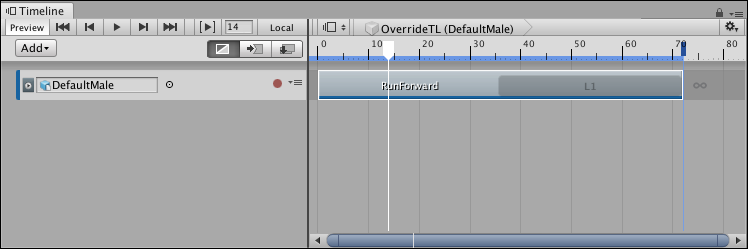
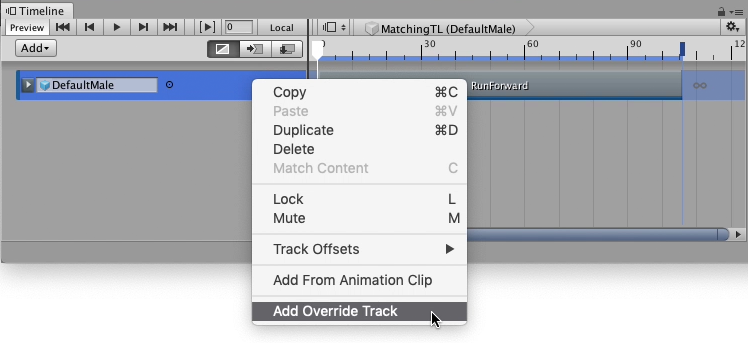
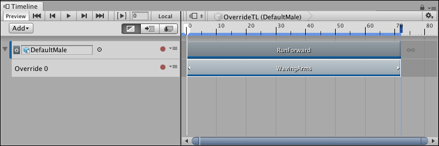
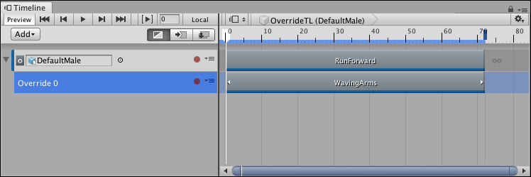
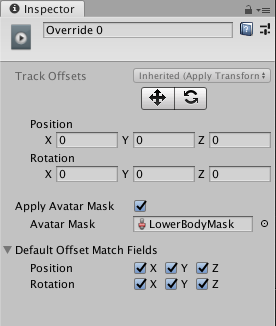
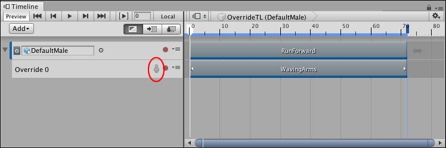

Using an Animation Override track and an Avatar Mask¶
This task demonstrates how to use an Animation Override track and an Avatar Mask to replace the upper-body animation of an Animation track. Use this technique to animate a humanoid to, for example, run and carry an object. For information on creating an Avatar mask, see Avatar Mask window.
This task assumes that you have already created a Timeline instance with a simple Animation clip on an Animation track bound to a humanoid:

This example uses a humanoid bound to a simple run cycle animation (RunForward) that loops once
Right-click the Animation track and select Add Override Track from the context menu. An Animation Override track, named Override 0, is linked to the selected Animation track. Notice that the Animation Override track is not bound to a GameObject. Because the Override track is linked to the Animation track above, the Override track is bound to the same GameObject, in this case, the DefaultMale humanoid.

To add an Override track, right-click the Animation track and select Add Override Track from the context menu]
From your Project, drag an Animation Clip with upper-body animation into the Override track. For example, drag an animation of a humanoid standing still and waving their arms. Position and resize the clip to match the Animation clip that you want to override.

The Animation Override track contains an Animation clip of a humanoid standing still, waving their arms (WavingArms). This clip was resized to match the Animation clip (RunForward) of the parent Animation track.
Play the Timeline instance. In this example, the WavingArms clip completely overrides the RunForward clip. To combine the lower-body animation from one Animation clip with upper-body animation from another Animation clip, specify an Avatar Mask for the Animation Override track.

To specify an Avatar Mask, select the Override track to view its properties in the Inspector window
From the Project, drag an Avatar Mask, that masks the lower body animation, into the Avatar Mask property in the Inspector window. Enable the Apply Avatar Mask checkbox. An Avatar Mask icon appears beside the track name.

An Avatar Mask, that masks the lower body animation, is specified for the Animation Overview clip in the Inspector window. This allows the upper body animation to pass through.
The Avatar Mask icon (red) indicates that the Animation Override track uses an Avatar Mask.
Play the Timeline instance. In this example, the DefaultMale humanoid uses upper-body animation from the WavingArms clip and lower-body animation from the RunForward clip. To temporarily disable the Avatar Mask, click the Avatar Mask icon.

The Avatar Mask icon (red) is gray when disabled. The WavingArms clip completely overrides the RunForward clip.